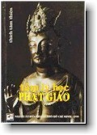

|
BuddhaSasana Home Page |
Vietnamese, with Unicode Times font |
|  |
Tâm lý học Phật giáo Thích Tâm Thiện |
|
PHẦN IV IV.1. CHƯƠNG 1: VẤN ĐỀ TÂM LÝ GIÁO DỤC * * * TỔNG QUAN Tâm lý giáo dục (Educational psychology) là khoa học khảo sát các vấn đề về con người như: nhân tính (personality), tánh hạnh (behaviour) và sự phát triển tâm lý của trẻ em, thanh thiếu niên và người lớn...; đồng thời tìm hiểu, quan sát và xây dựng các đường hướng giáo dục tâm lý thông qua các phương tiện cơ bản của học đường như: việc dạy và học, các dụng cụ, thiết bị khảo cứu, thí nghiệm v.v... và đề xuất biện pháp cụ thể nhằm giúp con người nắm bắt và giải quyết các vấn đề cá nhân trong đời sống. (64) Từ xưa đến nay, các nhà tâm lý giáo dục đã đề ra nhiều phương pháp nghiên cứu và ứng dụng cho ngành tâm lý giáo dục (như đã trình bày ở phần tâm lý học). Tuy nhiên, hầu hết các lý thuyết ấy đều tập trung xoay quanh một thực thể-ngã tính (self) như là điểm trung tâm của ngành tâm lý giáo dục. Điều đó đã góp phần tạo nên bước phát triển lớn lao cho tri thức của con người; nhưng nó cũng tạo ra không ít các mâu thuẫn, nghịch lý trong việc xây dựng đời sống hạnh phúc thật sự của con người. Bởi lẽ tính chất của ngã tính (personality, self, ego) là chấp thủ (attachment) và khát vọng (desire), nó diễn tiến trong sự phân biệt thế giới thực tại khách quan thành thế giới hiện hữu của sai biệt đa thù. Và, mỗi mỗi sự vật hiện tượng của cả tâm lý và vật lý đều được ý thức tự ngã áp đặt lên một bản sắc cá biệt (vesera). Nói theo ngôn ngữ của Duy thức, đó là thế giới của tự tính giả lập (parikalpitasvabhàva) - một thế giới của giả tưởng sai lầm (false imaginations), hoàn toàn không thật. Do đó, khi các nhà tâm lý và tâm lý giáo dục xem ngã tính như một thực thể chi phối toàn bộ cơ cấu của đời sống tâm lý và vật lý, ngay từ đó, con người phải đối diện với tự ngã và giải quyết những khát vọng không thể tưởng tượng được của tự ngã. Đây là then chốt của sự khủng hoảng tâm lý và tâm lý giáo dục của các lý thuyết tâm lý , nhân tính, giáo dục... từ xưa đến nay; đồng thời, nó cũng là tác nhân làm cho các lý thuyết ấy rơi vào tha hóa (alienation). Vì lẽ, con người và khát vọng của ý thức tự ngã là vô cùng tận. Sự khát vọng đó, qua lăng kính của Duy thức học và Phật học nói chung, không những chỉ đơn giản là dục vọng cá thể của mỗi con người như Dục hữu (The realm of desire - hay cõi dục), mà nó còn đi vào các cảnh giới khác như: Sắc hữu (The realm of existence) và Vô sắc hữu (The realm of non-existence) (65). Tuy nhiên, chỉ riêng đối diện với Dục hữu, tức thế giới của con người (và các loài sinh thú), các hệ thống tâm lý (psychology) và tâm lý giáo dục (Educational psychology) cũng còn rất nhiều điểm giới hạn. Có thể nói, tâm lý học phương Tây, nếu so với triết học Duy thức, thì đỉnh cao của nó chỉ dừng lại ở ý thức, và phần còn lại được đưa vào vô thức. Freud là người đầu tiên khai thác về vô thức, và sau Freud thì Karl Jung đi xa hơn nữa, đó là sự phân tích về tâm thức cộng đồng (Collective consciousness) - nghĩa là sự tương tác phản chiếu của tâm thức được dàn trải và tương dung, tương nhiếp giữa cộng đồng. Ở đây, đề cập đến vô thức, vì lẽ vô thức có thể được xem là tương đương với Tàng thức trong Duy thức học Phật giáo. Trong Phân tâm học của Freud, thế giới tâm lý được chia thành ba phần, đó là: Vô thức (state of unconsciousness), tiềm thức (subconscience) và ý thức (conscicousness). Vô thức mang tính bản năng (Id), tiềm thức đứng giữa vô thức và ý thức, và ý thức là sự tri giác, tự giác về thế giới thực tại khách quan, ý thức mang hai yếu tố: tri thức (như cảm tính, cảm giác, tri giác...) và tri thức lý tính (như khái niệm, phán đoán, lý luận...) (66) Vả lại, mặc dầu được bắt nguồn từ triết học - qua các triết gia như Platon, Aristote v.v... - song, tâm lý học phương Tây chính thức ra đời như một ngành học độc lập là từ đầu thế kỷ 19, tức cho đến nay chỉ hơn một trăm năm. Trong khi đó, tâm lý học Phật giáo - qua hệ thống triết học Duy thức - đã ra đời ít nhất là một ngàn năm trăm năm, tức hơn 15 thế kỷ qua. Do đó, tất nhiên không thể so sánh giữa sự non trẻ của hệ thống tâm lý phương Tây và sự thâm niên của phương Đông, đặc biệt là Phật giáo. Ngày nay, hầu hết các luận thư (Abhidhammas) về triết học Duy thức của Phật giáo đã được dịch sang nhiều ngôn ngữ phương Tây vì sự ảnh hưởng của nó đối với hệ thống tâm lý học phương Tây ngày càng sâu đậm. Tuy nhiên, điều mà tác giả muốn đề cập đến ở đây là sự giới hạn cơ bản của tâm lý học và tâm lý giáo dục phương Tây khi lấy ý thức tự ngã làm tâm cho mọi lý thuyết tâm lý và tâm lý giáo dục. Trong khi đó, Đức Phật, hơn 2600 năm về trước đã từng tuyên bố: "Tất cả pháp là Vô ngã" - nghĩa là tất cả hiện tượng sự vật từ tâm lý đến vật lý đều không có thực tính (xem phần "Đại cương Duy thức học"). Và như thế, sự xây dựng một ngã tính làm tâm phải chăng là một sai lầm lớn của hệ thống tâm lý giáo dục phương Tây ? Tiến sĩ E.F. Schumacher, trong tác phẩm "Small is Beautiful" (Nhỏ là Đẹp) - một cuốn sách được in trên 700.000 bản - đã ghi nhận về sự khủng hoảng của nền văn minh phương Tây như sau (67): "Nếu nền văn minh phương Tây thường xuyên rơi vào trạng thái khủng hoảng thì có thể nói rằng có những sai lầm nào đó trong hệ thống giáo dục của nó". Và, Schumacher đã trình bày sáu điểm then chốt mà ông cho rằng nó luôn luôn nằm trong tâm thức của con người "học thức" ("educated" people) của thời đại. Có thể tóm tắt như sau: (68) 1/ Tư tưởng tiến hóa cho rằng các hình thức cao hơn liên tục phát triển khỏi các hình thức thấp hơn như là một loại tiến trình tự nhiên và tự động. Sự ứng dụng hệ thống tư tưởng này đã diễn ra trong suốt hơn một thế kỷ đối với các lĩnh vực trong đời sống mà không có bất kỳ một sự ngoại lệ nào. 2/ Có những tư tưởng cạnh tranh - sự lựa chọn tự nhiên và sự sống còn tốt nhất, nó dường như có ý biện hộ cho tiến trình tự động và tự nhiên của sự tiến hóa và phát triển. 3/ Có những tư tưởng cho rằng những biểu hiện cao hơn của đời sống con người như: tôn giáo, triết học, nghệ thuật v.v... - cái mà Marx gọi là "Hạt giống ảo tưởng trong bộ óc của con người" (The phantasmagonias in the brains of men), thực chất không gì khác hơn là "sự bổ sung cần thiết trong tiến trình của đời sống vật chất", một thượng tầng kiến trúc được thiết lập để hóa trang và tăng phần lợi nhuận kinh tế... 4/ Trong sự cạnh tranh, người ta có thể nghĩ rằng với cách giải thích của Marxist về những biểu hiện cao hơn của đời sống con người, phân tâm học của Freud qui giảm những biểu hiện đó về một vùng xung động tối tăm của tiềm thức và giải thích chúng chủ yếu như là sự không thỏa mãn của những khát vọng tình dục ngay trong thời ấu thơ và niên thiếu. 5/ Có những tư tưởng chung về chủ nghĩa tương đối, khước từ mọi giá trị tuyệt đối, giải tán mọi qui tắc và tiêu chuẩn đưa đến một sự xói mòn toàn bộ về nhận thức chân lý trong chủ nghĩa thực dụng. Và nó làm ảnh hưởng đến thậm chí là toán học, mà Bertand Russell đã định nghĩa như là "một chủ đề mà chúng ta không bao giờ biết chúng ta đang nói về cái gì hay những gì chúng ta nói là sự thật". 6/ Cuối cùng là tư tưởng chiến thắng của chủ nghĩa tích cực - cho rằng, các giá trị tri thức đó chỉ có thể đạt được qua phương pháp của khoa học tự nhiên; và từ đó, không có tri thức nào còn nguyên vẹn, xác thực, trừ phi nó được y cứ trên những sự thật được quan sát một cách tổng quát. Chủ nghĩa tích cực, mặt khác, chỉ quan tâm đến sự "biết" và từ chối mọi khả thể của đối tượng tri thức về các ý nghĩa và mục tiêu của nó... Trên đây là phần đánh giá của E.F. Schumacher về các nguyên nhân gây ra khủng hoảng tâm lý của con người trong các nền văn minh phương Tây. Điều này cho thấy rằng, sự kiện lấy ý thức tự ngã làm tâm điểm trong việc giáo dục và phát triển nhân tính của con người (The personality of human beings) trong các hệ thống tâm lý giáo dục phương Tây chính là nguyên nhân đưa đến sự tôn vinh một nền văn minh vật chất, sản sinh ra chủ nghĩa thực dụng (Pragmatism), xóa nhòa mọi giá trị chân lý và đưa đến một sự bùng nổ cá nhân mà Maslow, người đầu tiên đưa ra hệ thống các nhu cầu của con người, bao gồm một hình tháp năm bậc và bậc cao nhất là "nhu cầu tự khẳng định" - một tên gọi khác của sự bùng nổ cá nhân. Sự kiện này lại tiếp diễn ngày càng mạnh và nhất là ở những năm cuối cùng của thế kỷ 20, đỉnh cao của sự "bùng nổ cá nhân" được chuyển sang một tên gọi mới là sự "chiến thắng của cá nhân". Trong tác phẩm dự đoán về tương lai của nhân loại của hai nhà tương lai học Mỹ - John Naisbitt và Patricia Aburdene dưới nhan đề: "Mười xu hướng mới cho những năm 1990 các xu hướng vĩ mô năm 2000" (Ten New Directions for The 1990’s Megatrends 2000) (69), đã đề cập đến các vấn đề "chiến thắng của cá nhân", có thể tóm tắt như sau: - Chiến thắng của cá nhân là một chủ đề lớn, đứng thứ 10 trong phần kết luận về thế kỷ 20. Tác phẩm cho rằng, cá nhân là chủ thể sáng tạo các tác phẩm nghệ thuật, khái quát hóa triết học chính trị và có một sự thể nghiệm tinh thần siêu việt. Đồng thời, về phương diện vật chất, chính cá nhân là người trực tiếp bỏ tiền tiết kiệm vào một đơn vị kinh doanh mới, hỗ trợ cho các đồng nghiệp hoặc các thành viên trong gia đình để đạt đến thành công. Cá nhân, do đó, hiện nay là đòn bẩy có hiệu quả cao hơn so với các thể chế trong sự thay đổi đời sống kinh tế vật chất một cách năng động, nhẹ nhàng. - Nguyên tắc đầu tiên trong trào lưu kỷ nguyên mới (New age) là học thuyết về trách nhiệm cá nhân. Thực ra đây là khái niệm Karma (Nghiệp) được phương Tây hóa từ Đông phương; nghĩa là con người phải hoàn toàn chịu trách nhiệm về mọi tư duy và hành động của chính mình. Tuy nhiên, học thuyết về trách nhiệm cá nhân này không giống với chủ nghĩa cá nhân (individualism), mà là một thứ triết học đạo đức - nâng cá nhân và trách nhiệm của cá nhân lên phạm vi toàn cầu (comos). Đó là sự cùng chịu trách nhiệm về sự bảo vệ môi trường sinh thái, ngăn ngừa chiến tranh hạt nhân, loại trừ sự đói nghèo v.v... Sự thành đạt của cá nhân một cách chân chính sẽ đóng góp thiết thực cho đời sống cộng đồng. - Đặc điểm của kỷ nguyên mới là cá nhân hóa và toàn cầu hóa cùng xảy ra trong một thời điểm - song hành. - Nghịch lý lớn nhất của kỷ nguyên mới là càng toàn cầu hóa, thì các cá nhân lại càng trở nên quan trọng hóa - có sức mạnh lớn hơn. Vì lẽ, sự thay đổi này được phản ánh trong giới tuyến Media - Internet toàn cầu. Do đó, sự nghe nhìn và tiếp cận thông tin kịp thời sẽ tăng cường sức mạnh cho các cá nhân. - Trong các đoàn thể như tôn giáo, thể chế chính trị, công đoàn... các cá nhân có thể lẩn tránh trách nhiệm, nhưng các cá nhân ấy không thể lẩn trốn chính nó, vì không có chỗ để trốn. - Công nghệ hiện đại làm tăng cường sức mạnh của cá nhân. Hiện nay có hơn một tỷ máy điện thoại tại chỗ để các cá nhân giao dịch trực tiếp với nhau mà không cần thông qua hệ thống quốc gia... Quê hương điện tử mới (điện thoại, fax, computer, viễn thông vệ tinh...) đang tạo lại cảnh quang của thế giới. - Thượng đế là khách hàng - tức là người tiêu dùng, và sản phẩm có giá trị cao là trí tuệ sáng tạo. Do đó, các ngành khoa học nhân văn và xã hội đang được phục hưng trên toàn cầu. - Trách nhiệm mới của xã hội là đền đáp lại cho các kết quả sáng tạo của cá nhân một cách thích đáng... ... Trên đây là một trong mười (từ sau đếm lại) khuynh hướng vĩ mô của năm 2000, đồng thời cũng là những thách thức và khích lệ lớn lao nhất trong lịch sử văn minh nhân loại. Từ những trích dẫn trên, cho thấy rằng ý thức về tự ngã - về cái tôi (I), cái của tôi (mine), và cái tự ngã của tôi (myself) quả thực là một ý tưởng, mà dưới đôi mắt tuệ giác vô thượng của Đức Phật là vô minh. Nó thúc đẩy con người đi từ thách thức này đến thách thức khác, đi từ thầm kín đến bán công khai và đến công khai hóa trên mức độ toàn cầu. Tất nhiên một sự thể bao giờ cũng có hai mặt: tích cực và tiêu cực. Song trên thực tế, ý thức tự ngã bao giờ cũng đưa đẩy con người đi vào các bức bách, khổ đau; trong khi mục đích của đời sống con người là tìm kiếm hạnh phúc và chân lý. Nói như thế không có nghĩa là Phật giáo chủ trương ngồi lại trong sự lãng quên (tọa vọng) theo quan điểm của Khổng Tử; mà trái lại nó kêu gọi con người, đánh thức con người đi ra khỏi cơn mộng mị về một tự ngã sai lầm, huyễn hoặc, rồi từ đó vươn lên một đời sống minh triết của thực tại Vô ngã. Đó là đời sống của sự toàn chân, toàn thiện và toàn mỹ. Và tất nhiên con đường đi đến thế giới thực tại vô ngã đó không đơn giản như một sự đánh đổi của đồng tiền, mà nó đòi hỏi ở con người một sự nỗ lực tự thân cao nhất, một ý thức trách nhiệm cao nhất và một tinh thần bi-trí-dũng cao nhất. Thực ra, sự kiện xây dựng một ý thức tự ngã là điều ai cũng làm được, nếu không muốn nói đó là sự mặc nhiên. Nhưng để vượt qua ý thức tự ngã và các mâu thuẫn, nhu cầu, xung lực... nội tại của nó là điều không phải ai cũng làm được. Và đây cũng là then chốt của sự thiết lập một đời sống hạnh phúc - an lạc thật sự cho con người. Do đó, hệ thống tâm lý giáo dục Phật giáo được bắt đầu từ đây, tức là từ ý thức (consciousness) của mỗi con người. * * * ĐỊNH HƯỚNG VÀ MỤC TIÊU CỦA TÂM LÝ GIÁO DỤC PHẬT GIÁO A- Định hướng giáo dục Hệ thống giáo dục Phật giáo là con đường hướng đến sự phát triển toàn diện của con người qua các mặt của đời sống, đặc biệt là tâm thức, nhằm kiến tạo một đời sống trí tuệ và hạnh phúc thật sự ngay tại con người này và cuộc đời này. Tất nhiên, con đường ấy bao gồm cả hai mặt tâm lý và vật lý, nhận thức và hành động, lý tưởng và thực tại v.v... Điều này được Đức Phật xác định rõ qua giáo lý Trung Đạo (Middle Way) - nghĩa là nếu con người không xa rời hai cực đoan: hoặc là khổ hạnh ép xác, hoặc là lấy lạc thú của xác thân làm mục đích của đời người đều rơi vào khổ đau. Và cái hạnh phúc thoáng qua (fleeting happiness) mà con người cảm nhận được từ hai cực đoan đó, thực chất chỉ là ảo ảnh của khát vọng và cuồng si, nó chợt đến và chợt đi trong nháy mắt ! Do đó, định hướng giáo dục Phật giáo là con đường giáo dục mà theo cách nói của E.F. Schumacher: "... đó không phải là con người phải biết mỗi thứ một ít, cũng không phải là biết rõ chi tiết của mọi vấn đề ..., mà là người thật sự biết rõ điểm trung tâm của vấn đề - không mơ hồ, nghi hoặc về niềm tin cơ bản của mình, về quan điểm của mình, về ý nghĩa và mục đích của đời sống... bởi sự soi sáng từ nội tâm" (70). Hoặc, nói theo Plato qua ngòi viết của Jasper: "...đó là sự trở về căn nhà tâm thức (Eros) - tức cái Một tối hậu (Absolute Oneness) hay cái Một (Arete) - toàn thể của chân lý vĩnh cửu ...; và đó là con đường đưa con người đến một viễn cảnh của sự toàn chân (sophon), toàn thiện (agathon) và toàn mỹ (kalon)" (71). Plato (427 - 347 B.C) ra đời sau Đức Phật (563-483 B.C) khoảng 136 năm trước Tây lịch (72), là một môn đệ nổi tiếng của Socrates. Theo Jasper, những gì người ta biết về Socrates là qua Plato. Trong tỉ dụ về "hang đá" nổi tiếng của ông có thể nói là rất gần gũi với tư tưởng giáo dục Phật giáo. Sự thể là như vầy, nhân loại được xem như là những kẻ bị xiềng xích trong một hang đá tối tăm. Chúng chỉ có thể nhìn thấy một nguồn sáng mập mờ từ ngọn lửa hồng lập lòe, thấp thoáng. Cái gì được nhìn thấy ở đây chỉ là những chiếc bóng đổ trên tường. Trước viễn cảnh của một thực tại như thế, những kẻ đang bị xiềng xích cứ cho rằng những chiếc bóng đổ trên tường đá đó là sự thật, là chân lý. Thế rồi, sau khi được cởi bỏ xiềng xích, một người vươn vai, đứng dậy và chuyển tầm nhìn... Lúc bấy giờ cái kinh nghiệm đầu tiên là cái cổ bị đau vì đó là lần đầu tiên hắn xoay đầu chuyển tầm nhìn về hướng khác. Và khi nhìn những ngọn lửa hừng sáng thì mắt hắn bị nhức nhối; và hắn theo thói quen, bấy giờ chỉ muốn nhìn lại những chiếc bóng mập mờ ẩn hiện trên tường. Khi bị đẩy ra khỏi hang, lần đầu tiên đối diện với ánh sáng của mặt trời, mắt của hắn bị lòa không nhận ra gì cả. Rồi sau đó, một cách chậm rãi hắn đã nhận ra. Sau khi nhận thức được sự thật (chân lý), hắn muốn trở lại hang đá để cứu rỗi bằng hữu của mình. Nhưng trớ trêu thay, bạn bè của hắn phản đối và đe dọa một cách kịch liệt nếu hắn dám can thiệp vào "sự thật" về những chiếc bóng đổ trên tường ! Câu chuyện tỉ dụ về "hang đá" này cũng tương tự như câu chuyện "những chàng mù sờ voi" của Đức Phật được ghi lại trong tàng thư văn học Phật giáo. Đây là sự thật về con người và thế giới của con người. Thế giới ấy đang bị Vô minh (Ignorance) bao phủ, giăng đầy. Và sự thể của một nền giáo dục đúng nghĩa không còn cách nào khác hơn là "kéo những sinh linh đang bị xiềng xích ra khỏi hang đá vô minh", để từ đó mỗi người tự mình nhìn thấy sự thật (Ehipasiko). Xuất phát từ điểm then chốt trọng yếu này, con đường giáo dục Phật giáo được Đức Phật đề bạt dựa trên nguyên tắc của Tứ Thánh Đế (Cattàri-àriya-sacca) - tức là mỗi người hãy tự nhận biết một cách rõ ràng: "Sự thật về khổ đau, sự thật về nguyên nhân của khổ đau, sự thật về sự tận diệt khổ đau, và sự thật về con đường đưa đến sự tận diệt khổ đau", tức Niết bàn - an lạc, giải thoát. Đây là định hướng giáo dục Phật giáo. B- Mục tiêu giáo dục Định hướng giáo dục Phật giáo là con đường đi ra khỏi khổ đau (Dukkha) và mục tiêu hướng đến là Niết bàn (Nirvana). Ở đây, Niết bàn không có nghĩa là an nghỉ nghìn thu trong sự vĩnh tịch ở một trú xứ cô liêu vĩnh hằng xa xôi nào đó; mà, Niết bàn là sự đạt đến Tuệ giác bình đẳng vĩ đại (Nirvikalpajnàna) cho dù ngay khi còn sống hay là chết. Mọi sự giải thích nào khác ngoài ý nghĩa này về Niết bàn đều rơi vào phiến diện, sai lầm. Tất nhiên, nói như thế không có nghĩa là phủ nhận mọi quan điểm giải minh và phân loại Niết bàn như của Thanh Văn và Phật, nhưng nội dung chính của Niết bàn là như thế. Và chính Đức Phật là người đầu tiên trong lịch sử nhân loại đã mở ra cánh cửa "bất tử" (Nirvana) này; và cũng từ đó, vô lượng pháp môn, phương tiện... được Đức Phật đề xuất, giới thiệu để qua đó con người có thể đạt đến Niết bàn. Tuy nhiên ở đây, chúng ta chỉ khảo sát về con đường đi vào Niết bàn - qua góc độ tâm lý giáo dục (Educational psychology) như được trình bày trong triết học Duy thức. Đó là sự mở đầu từ Tàng thức và sự kết thúc cũng là Tàng thức. Như vậy, Tàng thức chính là hai mặt của Niết bàn thực tại. Vì rằng, trong Tàng thức dung chứa cả các hạt nhân (hetu) ô nhiễm và thanh tịnh, và mục tiêu của phương pháp tâm lý giáo dục Phật giáo là làm cho các hạt nhân ô nhiễm, bất thiện trong Tàng thức tan biến, diệt tận, trả lại bản tính thanh tịnh vô nhiễm cho Tàng thức, mà thuật ngữ gọi là Bạch tịnh thức hay Vô cấu thức (Amalavijnàna). Đây là ý nghĩa "lìa sanh tử không có Niết bàn, muốn đến Niết bàn phải đi vào sanh tử; vì Niết bàn và sanh tử không hai, không khác". (73) Mặt khác, trên bình diện chuyên môn, mục tiêu của hệ thống tâm lý giáo dục trong triết học Duy thức (Vijnana hay Vijnapti) là hướng đến một sự chuyển y (Asrayaparàvrtti hay Paràvrtti) - tức là thay đổi toàn bộ nền tảng cơ cấu nội tại của tâm thức (Transformation at the base), phóng thích các hạt giống năng huân (subject) và sở huân (object) trong tiến trình vận hành của tâm (citta) và tâm sở (cetasika). Hay nói một cách cụ thể là giải trừ các hạt giống tạp niệm trôi lăn trong diễn biến tâm lý của chủ thể nhận thức và đối tượng được nhận thức. Vì thế, hệ thống tâm lý giáo dục Phật giáo không những chỉ tập trung khảo sát các hiện tượng tâm lý như: vui, buồn, khổ, lạc... mà còn đi vào nắm bắt cái bản chất của các hiện tượng tâm lý - tức những hạt giống (seeds), tập khí (energy of the past and the present habit) và gene nghiệp hay còn gọi là Nghiệp thức, Kiết sanh thức (Gandhabha) cũng gọi là hương ấm v.v... - đó là các động cơ chính gây nên sự bất an, rối loạn và khủng hoảng tâm lý. Do đó, thành tựu một sự chuyển y trong tâm thức là mục tiêu tối hậu - Niết bàn giải thoát - của các giải pháp được đề ra bởi triết học Duy thức. * * * CƠ SỞ VÀ ĐỐI TƯỢNG CỦA TÂM LÝ GIÁO DỤC PHẬT GIÁO Trong các hệ thống Phật học (Buddhist studies) nói chung đều lấy con người làm tâm. Nhưng con người ấy được xem là con người - vô ngã, là đối tượng có thể uốn nắn, chuyển hóa và vươn đến đỉnh cao của chân, thiện, mỹ chứ không phải là con người xuất hiện như một thực thể độc lập (separate entity). Tương tự như thế, ngành tâm lý giáo dục Phật giáo (Buddhist educational psychology) tập trung vào con người toàn diện (whole man) tức con người với đầy đủ mọi đức tính (virtue), phẩm chất (quality), tánh hạnh (behaviour), tâm thức (mind), ý thức (consciousness), tình cảm (sentiment) v.v... Hay nói khác hơn đó là con người của năm uẩn (sắc, thọ, tưởng, hành, thức). Tuy nhiên, về mặt chuyên môn, ngành tâm lý giáo dục Phật giáo tập chú vào hệ thống tám thức (Tàng thức, Mạt na thức, ý thức và năm thức giác quan - mắt, tai, mũi, lưỡi, thân) và xem đó như là cơ sở để khảo sát, nghiên cứu và ứng dụng tu tập (bao gồm cả dạy, học, và thực hành). Ở đây, tuy nhiên, đối tượng chính của sự có thể uốn nắn, giáo dục và có thể chủ đạo trong việc tạo ra một Paràvrtti (chuyển y) trong toàn bộ cơ cấu của tâm thức (mental formation) là ý thức (manovijnàna), tức thức thứ sáu trong hệ thống tám thức. Và do đó, ý thức là đối tượng chính của tâm lý giáo dục Phật giáo. Vì lẽ, như đã trình bày trong phần Đại cương về 30 bài tụng Duy thức (Phần III), thức thứ tám - Tàng thức, tánh khí của nó là vô phú và vô kí, không có thẩm định, phân biệt, lo nghĩ (tư lượng), mà nó luôn luôn trôi chảy như một dòng sông (hằng chuyển như bộc lưu) với các chức năng hoạt động chính là cất chứa, duy trì tất cả hạt giống trong chiều sâu tâm thức - (Tàng thức). Còn tánh khí của Mạt na thức - tức thức thứ bảy là hữu phú (bị che đậy bởi sự chấp thủ về tự ngã: ngã si, ngã mạn, ngã biến và ngã ái), nhưng vô ký (không chủ động); nó hoàn toàn tùy thuộc vào Tàng thức. Đặc trưng của thức này là tư lượng (reflecting), vừa thẩm (reflecting) lại vừa hằng (always) - tức là luôn luôn lo nghĩ, suy tư, thẩm sát... (always reflecting). Chức năng của thức này là nền tảng cho sự ô nhiễm hay thanh tịnh của ý thức và năm thức giác quan, gọi là nhiễm-tịnh Y. Y (asraya) là chỗ dựa, là cơ sở. Thức thứ bảy được phát sinh từ Tàng thức và làm nền tảng cho ý thức và năm thức giác quan. Nói theo ngôn ngữ của tâm lý học hiện đại, thức thứ bảy là cơ chế của bản năng dục vọng - hay bản năng sinh tồn của con người, cũng gọi là cơ chế tự tồn (mécanisme de autopreservation). Riêng đối với ý thức - tức thức thứ sáu, nó nương vào cơ sở của Mạt na (ý căn) và các pháp trần làm đối tượng mà được phát sinh. Đặc tính của ý thức là nó có đầy đủ ba tính (thiện, ác và vô ký - tức không thiện không ác); nó có đầy đủ cả ba lượng (hình thái của nhận thức): Hiện lượng ( trực giác hay trực kiến), Tỷ lượng (suy luận, phán đoán), và Phi lượng (các phán đoán sai lầm); nó có đầy đủ ba cảnh; Tánh cảnh (thực tại), Độc ảnh cảnh (ảnh tượng trong ý thức), và Đới chất cảnh (ảnh tượng về thực tại) ... Do ý thức có phạm vi hoạt động bao quát, chủ đạo trong các hình thái của nhận thức... và liên hệ năng động trực tiếp đến năm thức giác quan, cũng như khả năng tạo tác của nó v.v... nên ý thức trở thành đối tượng quan trọng nhất của tâm lý giáo dục Phật giáo. Vả lại, chúng ta thấy rằng mặc dù Tàng thức và Mạt na thức là hai đối tượng rất quan trọng của ý thức, nó vừa là cái nền tảng trực tiếp (Mạt na thức) của ý thức, vừa là nền tảng bao quát (Tàng thức) của ý thức. Song, do tính khí độc đặc của nó là vô kí, nên nó đóng vai thụ động (hoạt động lặng lẽ), như đất rừng để cho muôn ngàn chủng loại thảo dược, cây cối phát sinh. Ngược lại tính chất của ý thức, như đã đề cập, thông cả ba tính (thiện ác, và vô kí), nó đóng vai năng động - tích cực. Và do đó, ý thức mang tính chất trội (dominant) nếu so với Tàng thức và Mạt na thức. Đây là các lý do tại sao ngành tâm lý học Phật giáo và Phật học nói chung đều chú trọng đến ý thức. Đức Phật, trong kinh Pháp Cú, dạy rằng: "Ý dẫn đầu các pháp, ý làm chủ tạo tác, đối với ý nhiễm ô, nói năng hay hành động, khổ não bước theo sau, như bánh xe theo chân con vật kéo... Đối với ý thanh tịnh, an lạc bước theo sau, như bóng không rời hình". (Phẩm Song yếu). Tuy nhiên, ở đây có một điều cần ghi nhận rằng, Tàng thức được xem như là bản thể của nước; Mạt na thức, ý thức và năm thức giác quan là sóng - tức biểu hiện của nước. Về mặt hiện tượng, tám thức được phân loại theo từng chức năng, hoạt động; nhưng về mặt bản thể, bảy chuyển thức (Mạt na thức, ý thức và năm thức giác quan) đều là biến của Tàng thức. Do đó, hệ thống tám thức được xem như là một tổng thể; trong ý thức có Tàng thức, trong Mạt na thức cũng có Tàng thức và trong cả năm thức giác quan đều có Tàng thức. Đây là hiện hữu của một tổng thể bất khả phân ly. Từ đây, hệ thống tâm lý giáo dục Phật giáo sẽ khởi hành từ ý thức (Manovijnàna). * * * SỰ VẬN HÀNH CỦA Ý THỨC Như đã trình bày, sự trôi lăn (sinh, diệt) tương tục của Tàng thức và Mạt na thức là vô gián (không gián đoạn), thuật ngữ gọi là "hằng" (permanent). Trái lại, ý thức có lúc hoạt động, có lúc không hoạt động, như trong năm trường hợp sau đây: (1) trong cõi trời Vô tưởng, (2-3) trong hai định Vô tâm (Diệt tận định, và Vô tưởng định), (4) ngủ mê không có mộng mị, và (5) bất tỉnh nhân sự (chết giả, xỉu). Ngoài năm trường hợp trên, ý thức luôn luôn hoạt động. Sự vận hành đó được cụ thể hóa qua 51 tác năng cơ bản của tâm thức, gọi là tâm sở, bao gồm: 1/ 5 tác năng cơ bản và bao quát của tâm: (1) cảm xúc, (2) tác ý, (3) Cảm thọ, (4) ấn tượng và (5) các động lực tâm lý (Tư). 2/ 5 tác năng đặc thù của tâm: (1) ham muốn, (2) hiểu biết-thông suốt, (3) ghi nhớ, (4) tập trung và (5) vận dụng lý trí. 3/ 11 tác năng của tâm về điều thiện: niềm tin, siêng năng, biết tự xấu hổ, biết mắc cỡ với người khác, không tham lam, không sân hận, không si mê, không phóng đãng, không chấp trước, không làm điều nguy hiểm đến (các đối tượng khác). 4/ 6 tác năng cơ bản của tâm gây ra phiền não: (1) tham lam, (2) sân hận, (3) si mê, (4) kiêu mạn, (5) hoài nghi, (6) sự hiểu biết mang tính chất tội ác, bao gồm 5 loại: (a) chấp ngã, (b) có thành kiến, (c) mê tín dị đoan, (d) chủ quan và bảo thủ, (e) đi theo các hủ tục, hình thức và giáo điều. 5/ 20 tác năng thứ yếu của tâm gây ra phiền não: chia thành 3 loại: : (1) giận, (2) hờn, (3) che giấu tội lỗi, (4) ưu phiền, (5) ganh tỵ, (6) bỏn xẻn, (7) lừa dối, (8) nịnh hót, (9) làm hại, (10) kiêu căng. b- Phạm vi bình thường: (11) không biết xấu hổ với lương tâm, (12) không biết xấu hổ với kẻ khác. c- Phạm vi bao quát: (13) thân tâm giao động, (14) chứng trầm uất, (15) lười biếng, (16) phóng túng, (17) đãng trí, (18) rối loạn tâm lý , sự hiểu biết bất chính. 6/ 4 tác năng trung tính (bất định) của tâm: (1) ăn năn, (2) chứng buồn ngủ, (3) sự thao thức tìm cầu, (4) sự thẩm định kỹ lưỡng. (gọi 4 tác năng này là bất định, vì nếu mỗi tác năng đi theo điều thiện, nó được gọi là thiện, và ngược lại là ác...) Trên đây là 51 tác năng của tâm lý hay còn gọi là các hiện tượng tâm lý của con người, và phạm vi hoạt động của mỗi tác năng tâm lý trên luôn luôn gắn liền với ý thức. Nói khác đi, ý thức luôn luôn có mặt trong 51 hiện tượng tâm lý trên bất kỳ khi nào các hiện tượng đó xuất hiện. Tỉ dụ, sự trầm uất sẽ diễn ra khi ý thức bị suy thoái và phân tán gần như tê liệt, hoặc đãng trí sẽ xảy ra khi ý thức thiếu sự tập trung v.v... Tương tự như thế đối với các hiện tượng như buồn, giận, thương, yêu, ghét, muốn... Và để giải quyết các hiện tượng tâm lý trên, cần phải áp dụng phương pháp Tứ đế. Tỉ dụ, khi sự ưu phiền xảy ra, con người không cần phải chạy trốn nó hay cầu khẩn van xin ai hết. Ở đây, chúng ta cần tìm một chỗ yên tĩnh, vắng người, dừng lại các tạp niệm, bắt đầu quan sát và đối diện với sự ưu phiền. Hãy quan sát thật kỹ: (1) hiện tượng ưu phiền, (2) nguyên nhân của sự ưu phiền, (3) sự chấm dứt ưu phiền và (4) (làm cách nào để đi vào) con đường đưa đến sự chấm dứt ưu phiền. Đây là phương pháp rất hữu hiệu cần được hướng dẫn cụ thể cho từng đối tượng cụ thể. Thực tế cho thấy, khi có sự ưu phiền, bạn hãy đừng chạy trốn nó bằng cách nào khác hơn là cứ mạnh dạn đối diện và ngắm nhìn nó. Sự ngắm nhìn một cách chuyên chú và có hiệu quả, lập tức ưu phiền sẽ tan biến (vấn đề này sẽ được trình bày cụ thể hơn ở phần sau). IV.2. CHƯƠNG 2: TÂM LÝ GIÁO DỤC PHẬT GIÁO * * * CÁC HÌNH THỨC CỦA Ý THỨC Trong Duy thức học, có ba hình thái cơ bản của ý thức hay là sự nhận thức, hiểu biết về các hiện tượng diễn biến của thế giới tâm lý và thế giới thực tại khách quan (vật lý), bao gồm:
1/ Trực giác: Là sự nhận thức trực tiếp (derect perception) mà không cần thông qua quá trình suy luận. Tỉ dụ, đang đi trên hè phố, bất chợt ta gặp con bò, liền biết đó là con bò mà không cần phải dùng đến suy luận hay phán đoán. 2/ Suy luận: Là sự nhận thức gián tiếp (Indirect perception) qua sự phân biệt, so sánh, suy nghĩ... rồi mới đưa đến một nhận thức. Tỉ dụ, đang đi trên hè phố, bất chợt ta gặp con bò, nhưng lúc đó mắt bị hoa nên nhìn con bò không rõ, thấy nó giống con trâu... Sau khi đến gần, mắt hết hoa, ta nhìn thấy đúng là con bò. Sự phân biệt khác nhau và liên tưởng đến trâu và bò để cuối cùng xác định con bò là quá trình suy luận. 3/ Nhận thức sai lầm: Nếu trực giác sai và suy luận cũng sai thì gọi là nhận thức sai lầm. Tỉ dụ, đang đi trên hè phố, bất chợt gặp con bò mà cứ tưởng là con trâu; rồi suy luận con trâu có hai cái sừng, con vật này cũng có hai cái sừng; như vậy con vật này là con trâu. Như thế là trực giác sai lầm và suy luận cũng sai lầm. Điều này gọi là Phi lượng (Wrong perception). Tương tự như câu chuyện tỉ dụ về "hang đá" của Plato, hay "những người mù sờ voi" trong văn học Phật giáo. Ba hình thái nhận thức trên lại được chia thành 4 loại cụ thể theo các trường hợp đúng và sai. 1/ Trực giác đúng: (Còn gọi là Chân hiện lượng). Tỉ dụ: nhìn con bò biết rõ đó là con bò. 2/ Trực giác sai: (Còn gọi là Tợ hiện lượng). Tỉ dụ: nhìn cái bóng đổ trên tường mà tưởng là người thật. 3/ Suy luận đúng: (Còn gọi là Chân tỷ lượng). Tỉ dụ: Vì có khói nên có lửa (đúng với sự thật) 4/ Suy luận sai: (Còn gọi là Tợ tỷ lượng). Tỉ dụ: Vì có khói nên có lửa (sai với sự thật, vì khói đó là khói mây, chứ không phải là khói lửa. Suy luận như thế là vì người suy luận đứng xa thấy khói tưởng là có lửa). Trên đây là sự trình bày về hình thái của nhận thức ở góc độ cơ bản theo tri thức bình thường của con người. * * * CÁC HÌNH THÁI HOẠT ĐỘNG CỦA Ý THỨC Có năm trạng thái hoạt động của ý thức, đó là: ý thức trong tán loạn, ý thức độc lập, ý thức trong định, ý thức trong sự điên loạn và ý thức trong tương quan với năm thức giác quan. 1/ Ý thức trong tán loạn (Tán vị ý thức): Là ý thức bị phân tán, không tập trung. Tỉ dụ, vừa nghe điện thoại, vừa đếm tiền, vừa nói chuyện... Ý thức trong tán loạn làm suy giảm hiệu quả của năng lực hoạt động, của công việc và thường gây ra sự rối loạn và lãng quên. 2/ Ý thức độc lập (Độc đầu ý thức): Là ý thức làm việc một mình không liên hệ với 5 thức của giác quan như: mắt, tai, mũi, lưỡi và thân. Trong trường hợp ngồi lặng yên suy tư không để ý đến sự chi phối ở bên ngoài gọi là ý thức độc lập. Ý thức độc lập khi đạt đến sự tập trung cao, nó gần với ý thức trong định. 3/ Ý thức trong định (Định trung ý thức): Là ý thức được điều phục bởi chánh kiến và chánh tư duy; và đối tượng của ý thức trong định là những đối tượng không liên hệ đến tham, sân, và si. Do đó, ý thức trôi chảy trong thiền định theo một đề mục hiện quán nào đó, như khi thở, hay thân thể, cảm thọ, tâm thức và pháp trần... được gọi là chánh định (Right concentration). Ngược lại, nếu đối tượng của ý thức trong định còn liên hệ đến tham, sân, si hay các đối tượng làm sinh khởi tham, sân, si... được gọi là tà định. Sự khác nhau cơ bản giữa ý thức trong định và ý thức độc lập là ở chỗ, ý thức trong định được điều phục bởi chánh tri kiến (Right view); còn ý thức độc lập là ý thức hoạt động một mình nhưng tự do... 4/ Ý thức trong sự điên loạn (Loạn trung ý thức): Là ý thức không được hướng dẫn và kiềm chế bởi lý trí, nó gần như bị điều hành bởi bản năng và sự rối loạn của ý thức chính nó. Ý thức trong sự điên loạn là một loại bệnh lý đặc biệt. 5/ Ý thức trong tương quan với năm thức giác quan (Ngũ câu ý thức): Là sự hoạt động chung, cùng sinh khởi và cùng hoàn diệt của ý thức với năm thức giác quan. Như khi đạp xe chẳng hạn, ý thức cùng hoạt động với năm thức giác quan. Tỉ dụ, thân đạp xe, mắt nhìn đường, tai nghe earphone v.v... Trong năm trạng thái hoạt động trên, ý thức trong định luôn luôn ở trạng thái cao nhất và có hiệu quả nhất. Đó chính là sự định tâm, chuyên chú vào công việc mà mình đang làm như thiền định, học hành, đọc sách, nghe nhạc ... Năng lượng của ý thức trong định là nguồn năng lượng được tập trung. Do đó, các nhà tâm lý trị liệu xem ý thức trong định như là một phương tiện hiện đại và nhiệm mầu nhất trong các kỹ thuật lâm sàng như điện sinh học, tâm lý trị liệu v.v... * * * CÁC MỐI LIÊN HỆ GIỮA Ý THỨC VÀ THỰC TẠI Trong phần trình bày về đặc tính của ý thức đã đề cập đến chức năng thông suốt ba cảnh (đối tượng) của ý thức, đó là Tánh cảnh (thực tại), Đới chất cảnh (ảnh tượng của thực tại) và Độc ảnh cảnh (ảnh tượng của ý thức). 1/ Ý thức và Tánh cảnh Như đã định nghĩa (trong phần III), Tánh cảnh là thế giới thực tại. Nó không bị chi phối hay biến thái của ý thức chủ quan. Tỉ dụ, đỉnh Lanbiang là thực tại. Nhận thức của chúng ta về đỉnh Lanbiang thì không bao giờ đúng như là đỉnh Lanbiang chính nó. Về mặt ý thức, nó không thể được đồng hóa với bản chất của đỉnh Lanbiang. Về mặt nhận thức, đỉnh Lanbiang có một không gian ba chiều (dài, rộng, cao) và có tám hướng (đông, tây, nam, bắc, đông-bắc, tây-bắc, đông-nam, tây-nam); do đó, khi đối diện đỉnh Lanbiang chúng ta chỉ có thể nhận thức được nó trong chiều/mặt trực tiếp. Như thế, sự nhận thức về phía Đông của đỉnh Lanbiang không phải là một nhận thức toàn diện. Vì phía Đông của đỉnh Lanbiang không phải là đỉnh Lanbiang, mà nó chỉ là một phần của đỉnh Lanbiang. Do đó, nhận thức của con người bao giờ cũng bị giới hạn bởi không gian, thời gian và tầm nhìn của con người chính nó. Và thường, đối diện với một thực tại nào đó, chúng ta chỉ thật sự nhận thức một phần rất nhỏ của thực tại mà thôi. Tương tự như thế đối với tất cả sự vật hiện tượng. Cần lưu ý rằng, khi nói ý thức có thể tiếp xúc với thực tại (Tánh cảnh) có nghĩa là ý thức đó là ý thức của trực giác (Hiện tượng), mà không phải là ý thức của suy luận (Tỷ lượng) hay của nhận thức phiến diện, sai lầm (Phi lượng). Bất kỳ ý thức nào kèm theo một sự phân biệt dù nhỏ nhoi đến đâu cũng đều là ý thức của suy luận. Do vậy, ý thức chỉ tiếp xúc với thực tại thật sự khi và chỉ khi hoàn toàn vắng mặt mọi sự phân biệt. 2/ Ý thức và Đới chất cảnh Đây là lãnh vực chuyên môn của ý thức hay là đối tượng thường xuyên của ý thức. Như đã được định nghĩa, Đới chất cảnh là bóng dáng của thực tại, là ảnh tượng của thực tại. Tỉ dụ, dầu chỉ một lần ngắm nhìn đỉnh Lanbiang, song ý niệm về đỉnh Lanbiang và ảnh tượng của đỉnh Lanbiang luôn luôn được cất giữ trong Tàng thức. Bất kỳ lúc nào, khi chúng ta nghĩ đến đỉnh Lanbiang thì lập tức các ảnh tượng của nó sẽ hiện ra trong tâm thức của chúng ta. Đây là một loại thực tại ảo, là ảnh tượng, là bóng dáng của thực tại. Và hầu hết 24 giờ trong một ngày, con người thường sống với thực tại ảo, một thực tại hoàn toàn không thực, bị bóp méo, bị nhào nặn lại bởi ý thức chủ quan. Nó là một chất liệu kích thích sự khát vọng, thèm muốn v.v..., và cũng là nguyên nhân gây ra khổ đau. Tỉ dụ, hình ảnh của người yêu cũ cách đây 20 năm, thảng hoặc nó vẫn hiện lên trong tâm thức của chúng ta; và có người hằng sống với quá khứ, với những nỗi niềm đau khổ, tuyệt vọng... Các ảnh tượng của quá khứ sẽ không mất đi mà nó luôn luôn được ghi chép lại, được lưu giữ lại trong Tàng thức, gọi là ký ức. Đó cũng là "một cuốn nhật ký mà đi đâu bạn cũng mang theo". Đây là lý do tại sao kinh Nhất Dạ Hiền nói:
Có thể nói, vãng cảnh (quá khứ) và viễn cảnh (tương lai) hầu như chi phối 90% đời sống của con người. Như thế có nghĩa là con người đã đánh mất cuộc sống thật sự (bây giờ và ở đây) của mình cho các nuối tiếc quá khứ và ước vọng tương lai. Và đây là mối liên hệ thường xuyên của ý thức và thực tại ảo (Đới chất cảnh). 3/ Ý thức và Độc ảnh cảnh Như đã trình bày, Độc ảnh cảnh là ảnh tượng do ý thức tạo ra, nó không có trong thực tại và không liên hệ gì đến thực tại. Tỉ dụ, trong chiêm bao, ta thấy các nàng tiên nữ hái hoa cho mình, thấy các thiên thần hộ trì mình, thấy các sự thể mà đời thường mình chưa bao giờ thấy, và nó thực chất cũng chưa bao giờ có. Hoặc các ảnh tượng hội họa của trường phái siêu thực (Surealism), các ảnh tượng siêu hình (Metaphysical) v.v... đều thuộc về sáng tạo của ý thức độc lập, nó là bản chất của Độc ảnh cảnh (ảnh tượng không có trong thực tại). Đây là nội dung của các mối liên hệ giữa ý thức và thực tại. * * * BẢN CHẤT VÀ HIỆN TƯỢNG CỦA Ý THỨC Nói đến bản chất và hiện tượng của ý thức cũng là nói chung cho cả tám thức. Vì ngay từ đầu, tám thức được đề cập như là một tổng thể bất khả phân ly, gọi chung là tâm ý thức hay tâm thức. Tuy nhiên, ở đây sự thể được tập chú vào ý thức của các chức năng hoạt động của nó mà thôi. Sự hiện hữu của thức là do nương vào ý căn và trần cảnh mà sinh khởi; do đó, nó sinh và diệt tùy theo nhân duyên. Thức tự thân nó vốn là sự biểu hiện, mà biểu hiện là biểu hiện từ cái gì đó; cho nên đối với thức, chỉ có sự hoặc là biểu hiện, hoặc là không biểu hiện chứ không có khái niệm "bắt đầu và kết thúc". Vả lại, bản thân của sự biểu hiện là phân biệt, tức là cái này khác cái kia. Chính sự phân biệt hay nói chung là "biểu biệt" (Vikalpa), là bản chất của ý thức. Mặt khác, biểu biệt thì luôn luôn phải có sự biểu biệt (chủ thể hay kiến phần) và cái được biểu biệt (đối tượng hay tướng phần). Hai yếu tố này nương tựa vào nhau và sinh ra một biểu biệt - tức một nhận thức. Như vậy, nhận thức bao giờ cũng phải có chủ thể nhận thức (subject), đối tượng được nhận thức (object), không thể thiếu một trong hai. Và do đó, một đặc trưng khác của biểu biệt cần phải bàn đến là: tự biểu và cộng biểu. Tự biểu là biểu hiện riêng của chính nó, cộng biểu là biểu hiện chung về nó. Điều này tương tự như khái niệm "être-en-soi" và "être-pour-soi" của J.P. Sartre trong Hiện sinh thuyết. (74) Tỉ dụ con cá trong hồ chẳng hạn, nó vẫn có một đời sống riêng của nó, nó tung tăng bơi lội, nó vẫy đuôi nó buồn (Cá buồn thì cá vẫy đuôi, người buồn cảnh có ngược xuôi cũng buồn), nó sợ bị "nấu canh" v.v... Nhưng, qua nhận thức của anh chàng nghệ sĩ, của nhà sinh vật học và của chị đầu bếp thì con cá hoàn toàn khác nhau... Cũng như thế, nước đối với cá là tất cả sự sống, nhưng đối với con người nó chỉ là "một phần tất yếu của đời sống". Đó là tính cách tự biểu và cộng biểu của Vikalpa (biểu biệt). Tương tự, không gian, thời gian, bốn đại (đất, nước, gió, lửa), và v.v... tất cả đều là biểu biệt của ý thức. Khi hội đủ điều kiện (nhân duyên) thì nó biểu hiện, và khi chưa đủ duyên thì nó ẩn tàng. Và do đó, đối với hiện hữu (các pháp) không thể nói là đến hay đi, không hay có. Tóm lại, bản chất và hiện tượng, con người và thế giới, tự thân và tha nhân, tự biểu và cộng biểu, cá nhân và cộng đồng... tất cả là một tổng thể của "Duyên khởi". Nói theo ngôn ngữ của Hoa Nghiêm, tất cả đều mang ý nghĩa "tương tức" (interbeing), "tương nhập" (interpenetration) hay "Một là tất cả, tất cả là Một". Trong ý thức của ta có cả ý thức của cộng đồng (collective consciousness" (khái niệm của Jung) và ngược lại, trong ý thức của cộng đồng cũng có ý thức của ta v.v... Trên đây là phần trình bày đại cương về ý thức - đối tượng chính của tâm lý giáo dục Phật giáo. Nghĩa là ý thức đóng một vai trò vô cùng quan trọng trong tiến trình giáo dục, giúp cho con người vươn đến một sự toàn tri (giác ngộ). Ý thức là người cầm đuốc soi sáng cho toàn thể ngôi nhà tâm thức và thế giới hiện tượng khách quan. Và chỉ có ánh sáng của ý thức mới có thể đem lại cho cuộc đời của chính mỗi con người một đời sống hiểu biết thật sự. Tuy nhiên, nên nhớ rằng ý thức là vô ngã và không vĩnh hằng, chỉ trợt té một cái và ngất xỉu là ý thức băng tiêu. Những gì còn lại ở đây là hạt giống, tập khí và nghiệp nằm trong lòng Tàng thức, ngay cả khi thân thể này đã yên giấc nghìn thu. Do đó, con người sẽ mãi mãi chìm đắm trong thế giới luân hồi - tái sinh; và con người sẽ thật sự giải thoát - giác ngộ khi và chỉ khi nào mọi hạt giống ô nhiễm, mọi tập khí trần lao, và mọi nghiệp thức cấu uế, bất thiện không còn hiện hữu trong lòng Tàng thức. * * * CON ĐƯỜNG GIÁO DỤC TRUYỀN THỐNG CỦA PHẬT GIÁO Con đường giáo dục truyền thống của Phật giáo xuyên suốt 25 thế kỷ qua kể từ thời Đức Phật (563-483 B.C) cho đến nay bao giờ cũng được đặt trên nền tảng của Giới học (Adhisìla - sikkhà), Định học (Adhicitta - sikkhà) và Tuệ học (Adhipannà - sikkha). Giới học là những môn học về giới luật hay cơ sở của luân lý đạo đức Phật giáo, bao gồm các giới điều cụ thể như 5 giới, 10 giới v.v... tùy theo đối tượng cụ thể như Phật tử tại gia và tu sĩ... Tuy nhiên, các giới điều về mặt hình thức được xem như là qui tắc mô phạm, những tiêu chuẩn và giá trị đạo đức; do đó nó thường mang tính chất khuôn mẫu, ước lệ. Nhưng về mặt bản chất, giới pháp là cội nguồn của đạo lý, là năng lượng nuôi sống sinh mạng tuệ giác của nhà Phật. Đức Phật dạy: "Bao lâu giới luật còn thì Phật pháp còn". Và như thế, bản chất của giới pháp không phải chỉ là những gì được thể hiện qua các giới điều mà nó còn đi xa hơn nữa, đó là những hạt giống thanh tịnh nằm trong chiều sâu của tâm thức. Như vậy, Giới học cũng là môn học đi vào tâm thức, khảo sát và thanh lọc (trạch pháp) các hạt giống nhiễm ô và phát triển các hạt giống thanh tịnh trong tâm thức của con người. Định học là môn học đi vào điều phục các tâm hành hay còn gọi là ý thức. Sự điều phục đó nhằm mục đích hướng dẫn con người đi ra khỏi các rối loạn của đời sống tâm lý, và xa hơn là thể nhập chân lý-thực tại, giải thoát khổ đau ngay tại đời sống này. Định học, nói cho đủ là thiền định bao gồm các phương tiện, thể cách khác nhau như thiền quán - nặng về tư duy, và thiền chỉ - nghiêng về điều phục hơi thở, thân và tâm. Tuy nhiên, đối tượng chính của sự thiền định là làm cho tâm trong sạch (tự tịnh kỳ ý); cho đến khi nào tâm được thanh tịnh nghĩa là khi đó hành giả đạt được sự giác ngộ-toàn tri. Tiến trình đi đến sự giác ngộ đó được Đức Phật dạy rõ qua tứ Thiền, cửu Định: (1) Ly sanh hỷ lạc, (2) Định sanh hỷ lạc, (3) Ly hỷ diệu lạc, (4) Xả niệm thanh tịnh, (5) Không vô biên xứ, (6) Thức vô biên xứ, (7) Vô sở hữu xứ, (8) Phi tưởng phi phi tưởng xứ, và (9) Diệt thọ tưởng định. Tuệ học là môn học đi vào trí tuệ (wisdom). Trí tuệ đó được phát sinh từ chánh kiến (Right view) và chánh tư duy (Right thinking), tức là nhìn đúng sự thật và tư duy đúng sự thật. Và trí tuệ cao nhất là trí tuệ vô ngã hay trí tuệ vô phân biệt như được đề cập trong triết học Duy thức. Từ những chi tiết trên, ta thấy rằng Giới-Định-Tuệ dù được biểu hiện dưới những hình thái khác nhau; song, cả ba đều qui về một mục đích duy nhất là làm cho tâm thức trở nên thanh tịnh, trong sạch. Đây là điểm nhất quán, độc đặc trong toàn bộ các hệ thống giáo dục Phật giáo. Và nếu "Đạo" được định nghĩa là "Con đường" và "Phật" được định nghĩa là "con người giác ngộ", thì đạo Phật chính là "con đường đưa con người đi đến giác ngộ"; đây là nội dung của con đường giáo dục Phật giáo. Tất nhiên, mục tiêu là như thế, song con đường để đi đến mục tiêu đó thì không thể giống nhau. Cũng như tất cả mọi người đều mang giầy, nhưng không thể có một đôi giầy nào có thể được dùng chung cho tất cả mọi người. Đó là vì mỗi người có một cái nghiệp cá nhân của riêng mình. Cũng vì lý do này nên Đức Phật đã dùng đến "phương tiện" như con thuyền để đưa người sang sông. Vì thế, nói đến giáo dục là phải nói đến phương tiện giáo dục, tức là các điều kiện cần thiết để dạy và học; các dụng cụ, thiết bị khảo cứu, thí nghiệm; các đường hướng, biện pháp cụ thể v.v... nhằm giúp con người nắm bắt và giải quyết các vấn đề trong cuộc sống hiện thực. Cũng vậy, đối với Phật giáo, các hình thức sinh hoạt như học hành, niệm Phật, tụng kinh, hay thiền định v.v... cho đến các sinh hoạt bình thường như quét nhà, gánh nước, bổ củi... đều được xem như là phương tiện để điều phục và thanh lọc thân tâm của tự thân và cho tha nhân. Mọi hình thức khác dù mang danh nghĩa Phật giáo và được biểu hiện như thế nào đi nữa mà không hướng đến các mục tiêu trên thì hoàn toàn đi ngược lại với tinh thần Phật giáo. * * * TINH THẦN GIÁO DỤC PHẬT GIÁO Giáo dục thường được biểu hiện qua các môi trường nhất định như gia đình, học đường và xã hội. Và tinh thần giáo dục luôn luôn được thể hiện qua các mối tương quan hai chiều của sự truyền thụ và khích lệ giữa thầy và trò, giữa cha mẹ và con cái v.v... Do đó, trước hết giáo dục phải được xem là mối quan hệ song phương (bileteral relation); và trong mối quan hệ song phương đó, tâm thức của người học trò là trung tâm điểm của giáo dục. Giáo dục, theo tinh thần Phật giáo nói chung và Duy thức học nói riêng, là con đường đánh thức ý thức tự giác của mỗi người và giúp cho ý thức tự giác đó vươn đến sự trực nhận và thể nghiệm chân lý bằng thể cách năng động và sáng tạo của chính nó trong một tổng thể hài hòa giữa con tim và trí tuệ. Ở đây, mỗi cá thể được xem như là chủ nhân của hạnh phúc và khổ đau, không ai khác ngoài con người chính nó phải hoàn toàn chịu trách nhiệm về kho tàng tâm thức của mình. Trong kho tàng tâm thức ấy có chứa đầy đủ các hạt giống của thiện và ác, của địa ngục và Niết bàn, của trần thế và siêu thế... Cho đến việc gieo trồng và làm cho sinh khởi hay loại trừ và hủy diệt các hạt giống của tâm thức v.v..., đều do ý thức của cá thể quyết định. Như thế, mỗi người sau khi nhận thức sự thật về nguồn gốc của khổ đau và hạnh phúc, hãy tự chọn cho mình một đời sống, một sinh mệnh theo ý muốn của mình. Ở đây, qua lăng kính của Duy thức và Phật giáo nói chung, không có một đấng quyền năng nào hay một kẻ siêu nhân nào có thể ngự trị và chi phối sinh mệnh của con người ngoài ý thức của chính con người ấy. Cũng không có một động lực siêu nhiên nào có thể ban thưởng hay trừng phạt con người, cũng như không có một quyền uy nào tối thượng hơn quyền uy của tâm thức trong con người chính nó. Ngay cả các khái niệm như nghiệp, nghiệp thức, tập khí v.v... tất cả đều do ý thức của mỗi cá thể tạo nên. Nghiệp (Karma) là cái sinh mệnh thực hữu, hiện tiền mà đi đâu con người cũng mang theo. Nhưng Nghiệp là gì ? Đức Phật dạy: "Nghiệp là hành động có tác ý" (volitional action), hay hành động được phát sinh từ tâm thức; và Ngài dạy rõ rằng: "Con người là chủ nhân của nghiệp, là kẻ thừa tự nghiệp. Nghiệp là quyến thuộc, là thai tạng mà từ đó con người được sinh ra". Như thế, tinh thần giáo dục Phật giáo là tinh thần đánh thức con người và trả con người về với chính nó. Ở đây, ý thức của mỗi cá thể bao giờ cũng đóng vai trò trung tâm trong các lĩnh vực của đời sống. Stanley Hall - một nhà tâm lý học người Mỹ - và học trò của ông là John Dewey - một nhà triết học thực dụng - là những người đề xướng một phương pháp giáo dục mới tại Mỹ ở những năm cuối thế kỷ 19 và đầu thế kỷ 20. Theo quan điểm của phương pháp giáo dục mới mà Hall và Dewey đề bạt - đã một thời thịnh hành và vẫn còn ảnh hưởng đến nền giáo dục của Mỹ cho đến ngày nay - thì "sự tiến triển của tâm lý con người phát sinh từ bên trong mà ra. Như vậy, sự tiến triển ấy không phải nhờ sự thúc đẩy bên ngoài mà có. Và giáo dục phải lấy đứa trẻ làm khởi điểm, phải căn cứ trên tâm lý của nó chứ không phải là của người dạy nó, phải dựa vào năng lực và nhu cầu của mỗi đứa trẻ, phải lấy kỷ luật tự giác làm phương tiện, đứa trẻ là trung tâm điểm của học đường" (75). Về thế giới của tâm lý trong giáo dục, Dewey cho rằng: "Tâm lý của trẻ con không phải là một tinh thể (système statique) cứ đứng yên mãi một chỗ, giữ một mực, mà nó là một "động lực" diễn tiến không ngừng" (76). Với ông, cái mà gọi là bản ngã thực chất không gì khác hơn là tiến trình hoạt động (Le moi c’est de l’activité). Nó là một nguồn năng lượng tiềm tàng trong tâm thức và luôn luôn hoạt động tìm cách thể hiện "cái chân tính" của nó, và tiến trình hoạt động không ngừng đó được biểu hiện qua ba hình thức: (1) Ý chí (Volonté), (2) Tri giác (Intelligence) và (3) Tánh tình (caractire). Và theo Dewey, giáo dục chính là sự đào luyện tánh tình. Nghĩa là trước hết, giáo dục giúp cái động lực sẵn có trong tâm trí của mỗi người, phát động và kêu gọi đến cái động lực nguyên sinh của con người, để rồi sau đó, hướng dẫn nó phát triển và thích ứng hóa với xã hội. Sau cùng Dewey kết luận như sau: "Giáo dục không phải là một công việc dạy chữ, dạy tiếng, mà trước hết là để cho trẻ sống, hoạt động theo đà tiến phát của chúng, theo tiếng đập của con tim chúng trong một bầu không khí thuận tiện, để cho cả cơ thể, tâm tính và trí tuệ của chúng dung dưỡng và nẩy nở điều hòa. Giáo dục có nghĩa là học, nhưng học nhờ sự sống và trong sự sống (apprendre par la vie et dans la vie)"(77). Và từ đó, Dewey đề ra các nguyên tắc giáo dục như: (1) Nguyên tắc giáo dục đồng phát sinh" (pédagogie génétique), (2) "Nguyên tắc sư phạm cơ năng" (pédagogie fonctionnelle) và (3) "Nguyên tắc ý thức xã hội". (78) Từ những dẫn dụ trên, chúng ta thấy rằng ít nhất ở một vài góc độ nào đó về ý thức tự giác, về tâm thức hay các tiềm lực tâm lý v.v..., nền giáo dục hiện đại đã bắt gặp tinh thần giáo dục của Phật giáo, một tinh thần tự chủ, tự giác, năng động, sáng tạo... trong giáo dục mà Đức Phật đã truyền dạy cho các vị thánh đệ tử của Ngài cách đây hơn 26 thế kỷ. -ooOoo- |
Chân thành cám ơn Đại đức Thích Tâm Thiện đã gửi tặng bản vi tính (Bình Anson, 11-2001)
[Trở
về trang Thư Mục]
last updated: 02-02-2004